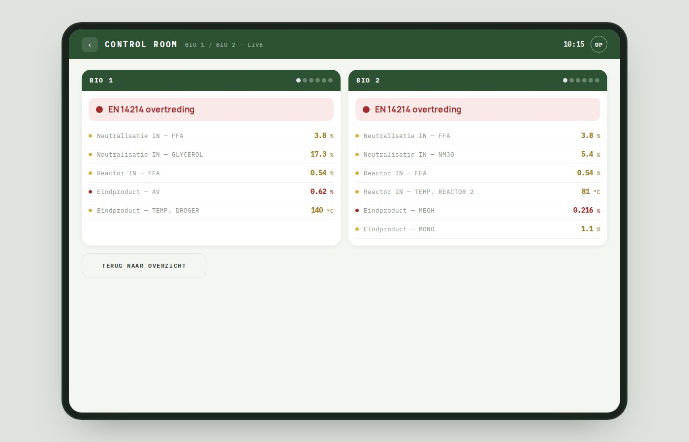

February – June 2026
Quality-control software for a 24/7 biodiesel plant — Operators were recording production measurements in a 45-sheet Excel workbook with no automatic checks. I reconstructed the real sampling rhythm from 5,000+ historical entries, designed one system across four hardware contexts, and translated the research into the API contract. The result keeps routine work visually quiet and escalates only the states that require action.

5,000+historical entries analysed
6operators in the core workflow
4connected product surfaces